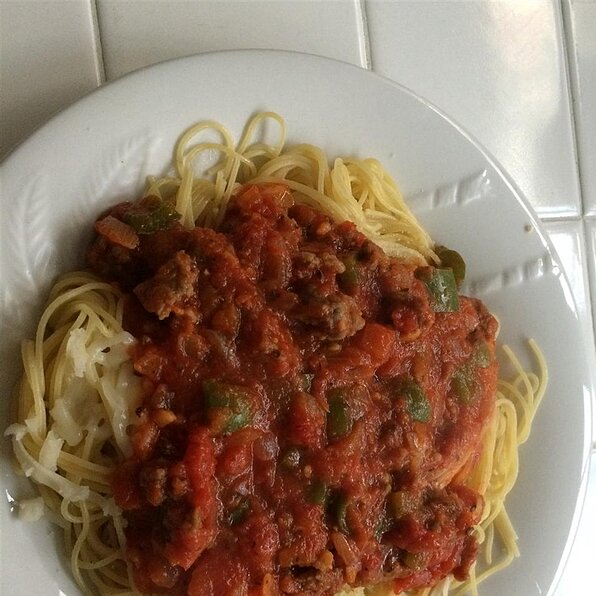

Spaghetti

Description
Spaghetti (Italian: [spaˈɡetti]) is a long, thin, solid, cylindrical pasta.
It is a staple food of traditional Italian cuisine. Like other pasta,
spaghetti is made of milled wheat and water and sometimes enriched with
vitamins and minerals. Italian spaghetti is typically made from durum wheat
semolina.
Ingredients
- 1 tablespoon olive oil
- 1 tablespoon olive oil
- 2 pounds sweet Italian sausage
- 1 pound fresh mushrooms, sliced
- 1 onion, chopped
- 1 green bell pepper, chopped
- 1 tablespoon minced garlic
- 2 (28 ounce) cans tomato sauce
- 2 tomatoes, diced
- 1 (6 ounce) can tomato paste
- 1 (6 ounce) can sliced black olives, drained
- 1 teaspoon dried oregano, or to taste
- 1 teaspoon dried basil, or to taste
- salt to taste
- 1 (16 ounce) package spaghetti, or as needed
- ¼ cup grated Parmesan cheese, or to taste
Steps
- Heat olive oil in a large skillet over medium-high heat. Cook and stir sausage, mushrooms, onion, green bell pepper, and garlic in the hot oil until sausage is browned and crumbly, about 20 minutes; drain and discard grease.
- Stir tomato sauce, diced tomatoes, tomato paste, and olives into sausage mixture; season with oregano, basil, and salt. Simmer mixture until flavors infuse, about 30 minutes.
- Bring a large pot of lightly salted water to a boil. Cook spaghetti in the boiling water, stirring occasionally until cooked through but firm to the bite, about 12 minutes. Drain and transfer to a serving bowl; top with tomato-sausage sauce and Parmesan cheese.